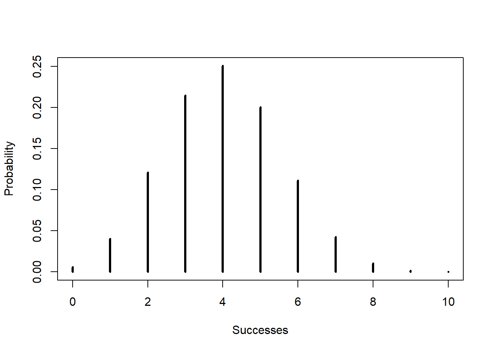
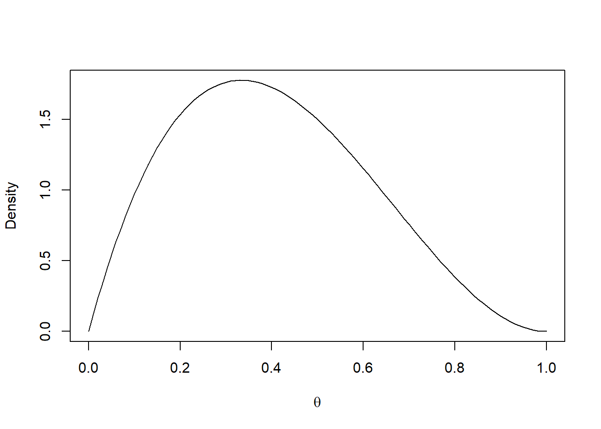
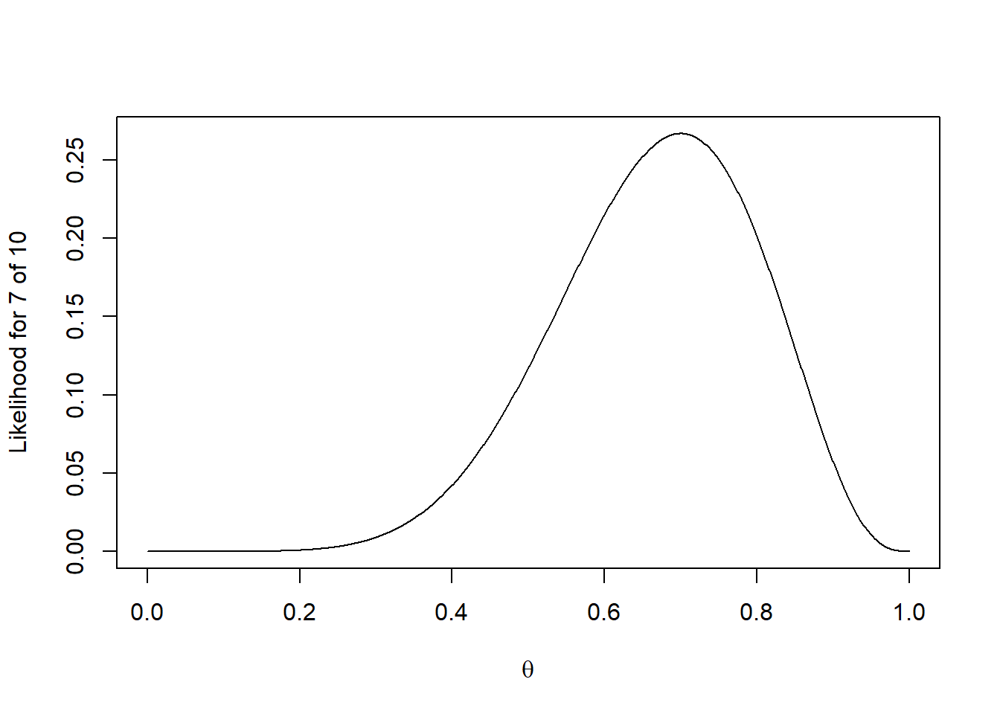

prior <- c(A = 0.3, B = 0.7)
likelihood <- c(A = 0.08, B = 0.02)
evidence <- sum(prior * likelihood)
prior * likelihood / evidence A B
0.6315789 0.3684211 Based on the corresponding unit in the supplied STAT 251 Midterm Exam Topics guide. Numerical examples are illustrative, not additional course data.
For \(P(B)>0\), \[P(A\mid B)=\frac{P(A\cap B)}{P(B)}.\] For a mutually exclusive, exhaustive partition \(H_1,\ldots,H_k\), \[P(B)=\sum_jP(B\mid H_j)P(H_j),\qquad P(H_i\mid B)=\frac{P(B\mid H_i)P(H_i)}{\sum_jP(B\mid H_j)P(H_j)}.\] Identify the hypotheses, assign prior probabilities, compute the evidence under each, and normalize. Do not interchange \(P(B\mid H)\) and \(P(H\mid B)\).
A machine is from supplier A with probability 0.3 and B with probability 0.7. Defect rates are 0.08 and 0.02. Given a defect \(D\), \[P(A\mid D)=\frac{0.08(0.3)}{0.08(0.3)+0.02(0.7)}\approx0.632.\]
prior <- c(A = 0.3, B = 0.7)
likelihood <- c(A = 0.08, B = 0.02)
evidence <- sum(prior * likelihood)
prior * likelihood / evidence A B
0.6315789 0.3684211 A pmf \(p(y)=P(Y=y)\) satisfies \(p(y)\geq0\) and \(\sum_y p(y)=1\). The support is the set of possible outcomes with positive mass. For a binomial variable it is \(\{0,\ldots,n\}\) when \(0<\theta<1\).
A pdf satisfies \(f(y)\geq0\) and \(\int f(y)\,dy=1\). Probabilities are areas: \[P(a<Y<b)=\int_a^b f(y)\,dy.\] For a continuous variable \(P(Y=y)=0\); density height is not probability and can exceed one. An indicator makes support explicit. For example, \[f(y)=\frac1{v-u}\mathbf1_{(u,v)}(y),\quad u<v.\] The indicator equals one on its specified set and zero elsewhere.
For either type, \(F(t)=P(Y\leq t)\). It is nondecreasing, right-continuous, and approaches zero and one at the two tails. A discrete cdf has jumps. In general, \[P(a<Y\leq b)=F(b)-F(a).\] For discrete variables, inclusion or exclusion of endpoints can change the answer.
\[E[g(Y)]=\sum_y g(y)p(y)\quad\text{or}\quad\int g(y)f(y)\,dy,\] when the expectation exists. With \(\mu=E(Y)\), \[\operatorname{Var}(Y)=E[(Y-\mu)^2]=E(Y^2)-\mu^2.\] Also \(E(a+bY)=a+bE(Y)\) and \(\operatorname{Var}(a+bY)=b^2\operatorname{Var}(Y)\). Expectations add even without independence; variances add without covariance terms only when the covariances vanish.
| Prefix | Meaning | Example |
|---|---|---|
d |
pmf or pdf value | dbinom(3, 10, 0.4) |
p |
cdf, lower tail by default | pbinom(3, 10, 0.4) |
q |
quantile (inverse cdf convention) | qbeta(0.975, 2, 3) |
r |
random draws | rbeta(1000, 2, 3) |
k <- 0:10
mass <- dbinom(k, size = 10, prob = 0.4)
plot(k, mass, type = "h", lwd = 3, xlab = "Successes", ylab = "Probability")
c(mean = sum(k * mass), variance = sum((k - sum(k * mass))^2 * mass)) mean variance
4.0 2.4 # P(2 <= Y <= 5): subtract the cdf at 1, not 2
pbinom(5, 10, 0.4) - pbinom(1, 10, 0.4)[1] 0.787404curve(dbeta(x, 2, 3), from = 0, to = 1,
xlab = expression(theta), ylab = "Density")
theta <- seq(0, 1, length.out = 1001)
plot(theta, dbinom(7, size = 10, prob = theta), type = "l",
xlab = expression(theta), ylab = "Likelihood for 7 of 10")
The pmf plot varies the count while holding the probability fixed. The likelihood plot varies the probability while holding the observed count fixed.